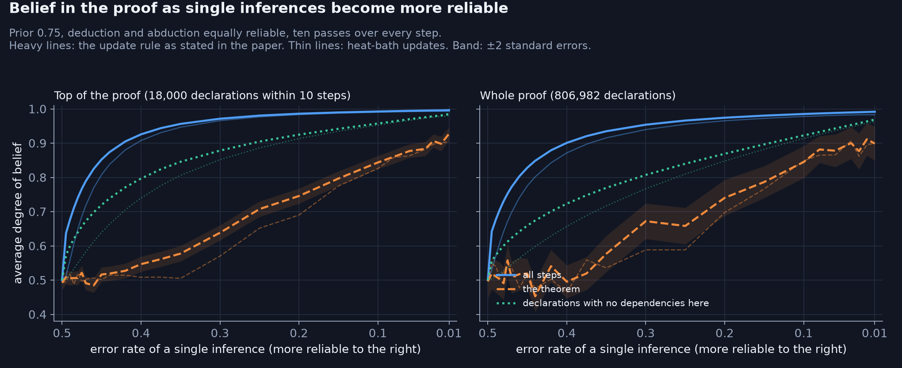
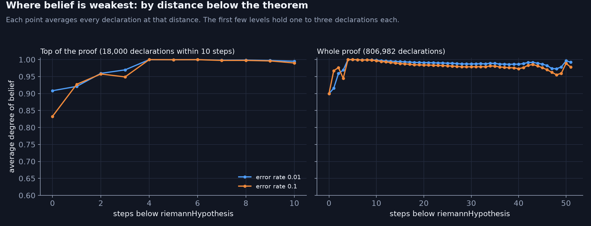
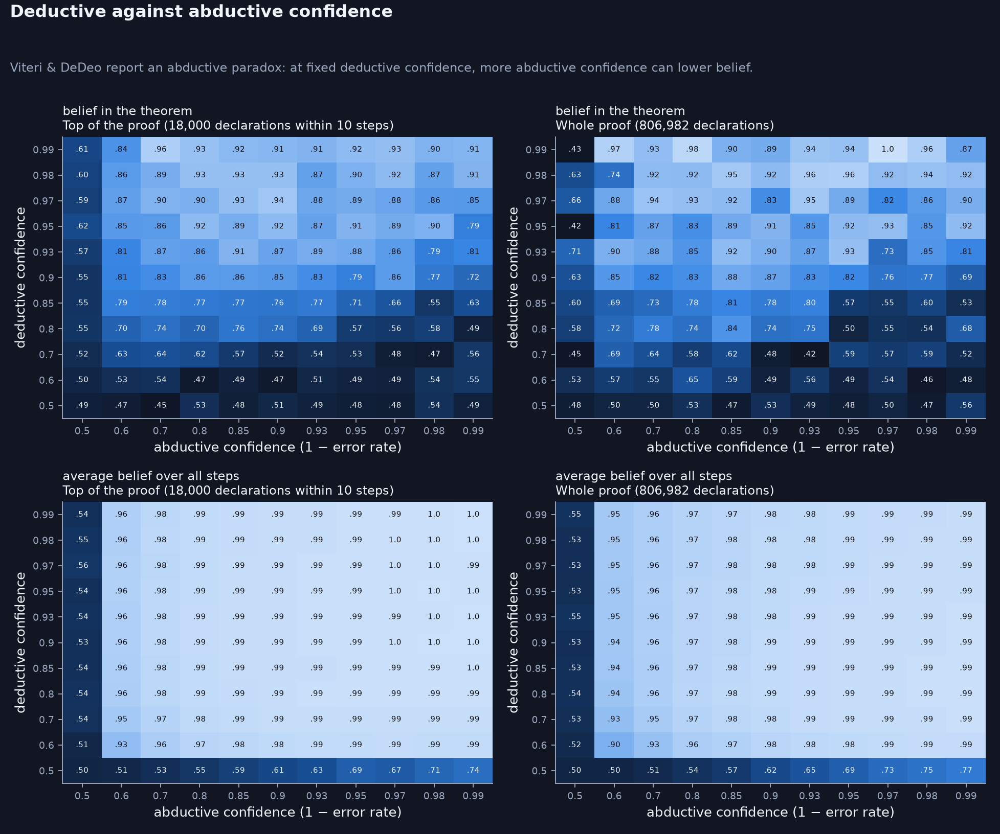
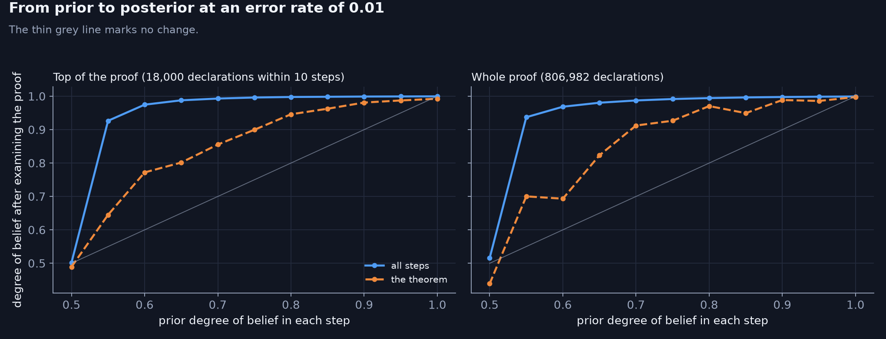

Dependency graph of the alpo.ge Proof of the Riemann Hypothesis
The mathematics and its Lean formalization are the work of Levent Alpöge, working with Claude. His note announcing it is alpo.ge/remark.pdf. This page is drawn from the files on the compiled oleans page, which also has the checks run on them.
Every declaration in the compiled Lean development and which other declarations it uses:
1,063,440 declarations joined by 10.9 million links. 806,982 of them (76%) are used, directly
or through a chain of other declarations, by the final theorem riemannHypothesis. Below: the
network as a whole, how belief would spread through it, a navigator for walking it one declaration at a time,
and a map by folder.
Made possible by the support of Grant 63750, “Explaining Universal Truths”, from the John Templeton Foundation. Additional support from research funds of the Laboratory for Social Minds and from the Survival and Flourishing Fund.
The proof as a network
All 1,063,440 declarations at once. The clusters are the modules that Louvain clustering finds in the links alone, with no knowledge of files or folders: 7,295 of them, 48 with more than a thousand declarations, at a modularity of 0.80. Hover over a cluster for its name and its most-used declarations; select it to keep them in the box and follow them into the navigator.

riemannHypothesis.Each module is laid out on its own and the modules are then arranged by how strongly they are linked; the 20,858 declarations in modules of fewer than thirty are left out of this view. The modules cut across the source tree: the largest draws only a quarter of its declarations from any one folder. The module names are a reader’s labels, written for the thirty largest from their most-used declarations, namespaces and distinctive name-words; smaller modules are labelled by three of those words. The proof itself does not name them. The picture with a key of the twenty largest modules is a 7200 × 4800 PNG (23 MB).

How belief would spread through it
Viteri & DeDeo, “Epistemic phase
transitions in mathematical proofs” (Cognition, 2022), model a reader who goes over a proof step
by step, revising belief in each claim to agree with the claims it depends on (deduction) and the claims that
depend on it (abduction), with some chance of error at every inference. Above a critical reliability, belief
jumps to near-certainty across the whole network. Here the same analyses are run on this proof, on two networks:
the top of the proof, the 18,000 declarations within ten steps of riemannHypothesis (the
paper’s convention of stopping at the first depth past 10,000 claims), and the whole proof, all 806,982
declarations the theorem uses.
Dependence and use
![Two panels on logarithmic axes. Left: the share of declarations that depend on at least a given number of others. It falls off far more slowly than a Poisson distribution of the same mean; fitted power-law tails have exponent 2.82 for the top of the proof and 2.99 for the whole proof, and a power law with an exponential cutoff follows the points more closely. Right: the share of declarations used at least a given number of times, with fitted power-law tails of exponent 2.06 for the top of the proof and 1.89 for the whole proof.](rh-graph/ept/fig1_degrees_dark.png)
In the paper’s machine proofs, written in Coq, the number of claims a claim depends on is Poisson-like, mostly about three, and the number of claims that use it has a power-law tail with exponent 2.15 ± 0.13. Here the use tail matches: the exponent is 2.06 ± 0.02 for the top of the proof (tail from 12 users, fitted by the method of Clauset, Shalizi and Newman). Over the whole proof the fit gives 1.89, but there a log-normal describes the data better than a power law, so that number should be read loosely.
Dependence is heavy-tailed too, which the Coq proofs were not. A declaration depends on 9.5 others on average with a variance of 190, where a Poisson would have a variance of 9.5; some depend on several hundred. A power law fitted to the tail has exponent 2.82 ± 0.03 for the top of the proof (from 16 dependencies, the top 21% of declarations) and 2.99 ± 0.01 for the whole proof (from 22, the top 15%). The tail bends below a straight line, though: a power law with an exponential cutoff (exponent 1.8, cutoff near 44 dependencies; 1.5 and 37 for the whole proof) or a log-normal fits significantly better than a pure power law in both networks. The likely reason for the difference from the paper is style and grain. Its networks are built from the individual deductions inside Coq proof terms, each of which draws on a few others. A Lean declaration is a whole lemma or definition, and a long one can draw on dozens or hundreds of earlier ones, so the number of things one declaration draws on varies far more.
The transition

The body of the proof becomes believed at very high error rates. Average belief over all
steps passes 0.9 once the error rate of a single inference falls to about 0.42 (0.40 for the whole proof); the
paper puts the rough transition point for its examples near 0.1. Each declaration here has about twenty
neighbours, and a few are used by tens of thousands of others, so agreement spreads easily.
The theorem itself is another matter. At an error rate of 0.01 the degree of belief in
riemannHypothesis is 0.906 ± 0.003 for the top of the proof and
0.895 ± 0.011 for the whole proof. That is lower than all 48 machine proofs in the paper’s
table (the lowest is 0.932) and its five hand-coded ones (lowest 0.941). Heat-bath updates, which the paper notes
as an equivalent rule, give the same value.

The reason is where the theorem sits. The first four levels of the proof hold one, one, two and three declarations, a thin chain hanging off a densely linked body. If that chain starts out disbelieved it can stay that way for the ten passes the model allows, which the paper calls frustrated freeze-in: belief is 0.91, 0.92, 0.96 and 0.97 at those levels and essentially 1 from four steps down.
Modules
| Network | Declarations | Modules | Modularity | ΔL1 per declaration |
|---|---|---|---|---|
| Whole development, used or not | 1,063,440 | 7,295 | 0.80 | not computed |
| Whole proof | 806,982 | 886 | 0.81 | +17.0 (quartiles 16.8 to 18.0) |
| Top of the proof | 18,000 | 27 | 0.77 | +11.2 (quartiles 9.5 to 14.9) |
The paper measures how much more easily a whole module changes its mind than the same number of claims scattered across the network: ΔL1, the difference in log-likelihood per claim flipped, which runs from +9 to +19 over its machine proofs. This proof falls in that range. Two differences from the paper: modules here are found by Louvain clustering, because Girvan–Newman does not scale to networks this large, and ΔL1 is reconstructed from the paper’s description, since the appendix with its exact formula was not to hand.
Deduction against abduction, and the effect of the prior

The paper reports an abductive paradox: at fixed deductive confidence, more abductive confidence can lower belief. It shows up here for the theorem. At a deductive confidence of 0.85, belief in it is 0.79 when abductive confidence is 0.6 and about 0.6 when abductive confidence is 0.98 or 0.99. Average belief over all steps shows no such turn.

At an error rate of 0.01, a prior of 0.55 in each step is enough to bring average belief above 0.9. Belief in the theorem follows the prior more closely, for the same reason as above.
Settings, as in the paper unless noted: each step starts true with probability 0.75; deduction and abduction are equally reliable; the update rule is applied ten times per declaration; belief is the time-average of a declaration’s state, here over the second half of a run, averaged over 640 runs per point for the top of the proof (6,400 for the value at 0.01) and 128 for the whole proof (640 at 0.01). This is a model of how belief forms. It says nothing about whether the proof is correct.
Walk the graph from any declaration
Type a declaration’s name, or the end of it, and pick it from the list. The drawing shows what uses it on the left and what it uses on the right, as many steps out as you choose. Select any circle to move there. The box beneath gives its signature, its surprise in bits per token, and the full lists.
Map of the proof, by folder
Each circle is a folder of the source tree, sized by how many declarations it holds. An arrow from A to B means declarations in A use declarations in B, and its width shows how many such uses there are. Folders nearer the top sit closer to the final theorem. Select a circle to read its numbers; open it to see the folders inside.
| Folder | Declarations | Used by final theorem | Steps below it | Bits / token | Uses | Used by |
|---|
The top of the proof, declaration by declaration
The declarations within a few steps of riemannHypothesis, left to right by how many steps away they are.
Show the first levels as a table
| Declaration | Steps below | Kind | Declarations beneath | Direct uses |
|---|
How deep the proof goes
The number of declarations at each distance below riemannHypothesis, counted along the shortest chain of uses, split by top-level library.
Show as a table
The whole graph as one file
alp-declaration-graph.json.gz
(71 MB; 567 MB unpacked) holds all 1,063,440 declarations and 10,944,946 links, with each declaration’s
surprise. It is one JSON object with
a meta block that documents the fields and a nodes array with one declaration per line:
{"id":36593,"name":"GlobalTheory.Mem.Top.Bl.anyGeometry","kind":"def",
"file":"Development/AbelianVarietyTheory/Definitions/AutomorphicMembership/OverIx.lean","line":19,
"steps_below_riemannHypothesis":8,"tokens":13,"tokens_signature":7,"tokens_alone":13,
"surprise_bits":54.0,"surprise_bits_signature":38.1,"surprise_bits_body":15.9,"surprise_bits_alone":127.7,
"uses_in_signature":[36591],"uses_in_body":[760064,761091,804521]}
SHA-256 e36b1a4774c55d042706f5f3bacdefc411d5baa9b7c2d32c51855bcfcfca4c96.
The numbers in the two uses lists are ids of other entries.
steps_below_riemannHypothesis is null for a declaration the final theorem does not use.
The surprise fields are totals in bits: surprise_bits sums over the declaration’s tokens, each
scored given the file so far, and surprise_bits_alone is the same declaration scored with no
context. Divide by the matching token count for bits per token.
.olean files of all 175,187 modules, so the links are the ones the Lean compiler recorded, including uses
introduced by tactics, instances and notation. A node is a source declaration; compiler-generated helpers, structure
fields and constructors are folded into the declaration that owns them. Uses of Mathlib and core Lean are not drawn.
Surprise is the mean number of bits per token that a small language model (Kimina-Prover-Distill-0.6B) needs to
predict a declaration’s text given the file so far. A link says that one declaration mentions another. It does not
say the mention carries mathematical weight, and nothing on this page checks the proof.